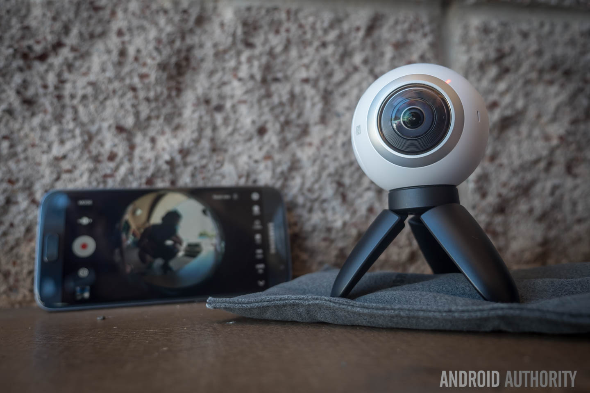

SECURITY
The smart home promises a futuristic home experience where everything you need is just a simple voice command away, even when you’re far from home. There are some very cool gadgets that let you do a lot with home automation, many of which are incorporated into home security systems. These include smart doorbells, smart locks, smart cameras, smart thermostats, smart lights, and smart smoke alarms. .
Smart Doorbells
One of the most common and security-focused components of a smart security system are smart doorbell cameras. These incorporate a small camera in the doorbell button. When someone rings the bell—or approaches the door, depending on the system—the doorbell sends an alert to your phone and activates the camera, letting you see a clear picture of who’s there, no matter where you happen to be.
Doorbell cameras are very useful, and there are several great options, like Ring Video Doorbell, Vivint Doorbell Camera, and August Doorbell Cam. These are features you’ll want to look for in a video doorbell.
- High-resolution video
- Motion sensing
- Two-way audio
Smart Cameras
Smart cameras take the traditional security camera concept and turn the dial up to eleven. These cameras incorporate Wi-Fi connections that allow them to be viewed and controlled remotely using a smartphone app. Many can also upload the footage to the Cloud for storage, eliminating the need for a potentially complicated on-site storage setup.
There are a lot of options in this space. Choosing one starts with knowing whether you want indoor or outdoor cameras. The main difference is construction: Outdoor cameras need to survive the elements, which usually means they are bulkier and made from tougher materials like metal. Indoor cameras can be smaller and more discreet, because they aren’t as likely to get beaten up or tampered with.
In either case, features you’ll want to look for include high resolution, a wide field of view, motion detection, and audio recording. Normally we would include Wi-Fi connectivity as an essential feature, but because we’re talking about smart cameras, Wi-Fi is a given.
Some recommendations for great indoor cameras are the Nest Cam and Vimtag 361 HD. For outdoor cameras, check out the Amcrest QCAM and the ZOSI 960H. Any of these options will serve you well.

Smart Smoke Alarms
The last common home automation feature of a security system is the humble smoke alarm. This device takes the traditional smoke alarm and brings it into the digital age, with Wi-Fi connectivity and the ability to communicate and pinpoint exactly where a fire is located. The really nice thing about these alarms is that they can send the alerts to your phone so you can be aware of any issues even when you’re away from home. You can also easily silence them in the event of a false alarm—who hasn’t set off their smoke alarms at least once while cooking?
Top picks in this category include the Nest Protect and the First Alert Onelink. Both detect carbon monoxide in addition to smoke and alert you in a human voice rather than a screeching alarm tone.
If you have any further questions about home automation systems, take a look at our guide to home automation.